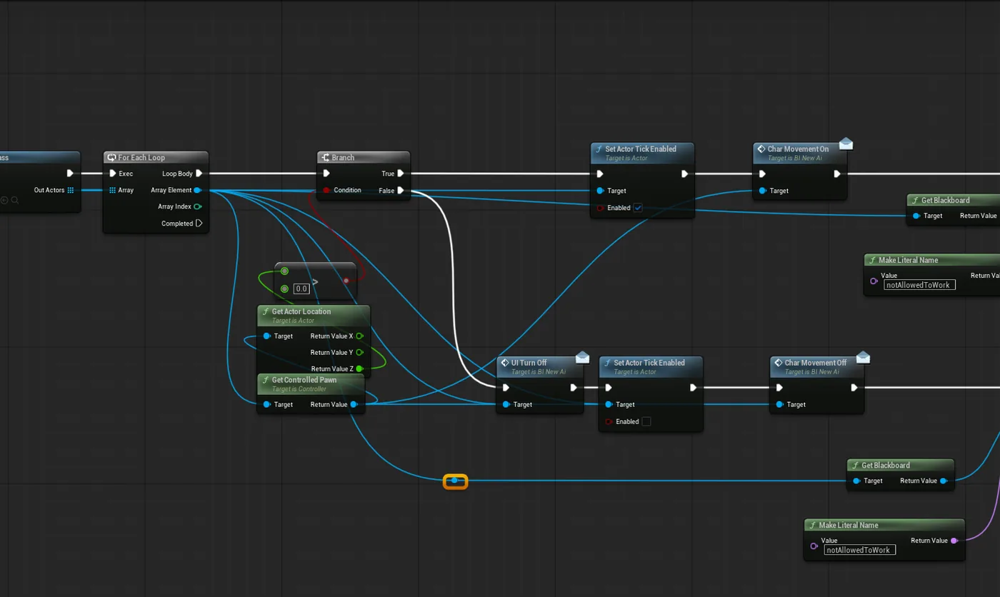
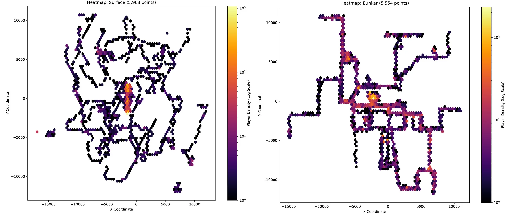

Project Rod3nt
Gameplay Programmer & QA Engineer
- Software:
- Unreal Engine - Jetbrains Rider - Perforce - Jira - Figma - Steamworks
- Languages:
- C++ - Unreal Blueprint - Python
- Team Size:
- 15
Project Rod3nt is an action adventure game with similarities to Untitled Goose Game and Hitman but with a twist. You play as cybernetic rodents sent back in time to commit an assassination that will change history forever.
Technical Architecture
AI Optimization: Developed custom C++ classes to manipulate AI Perception variables at runtime, overcoming Blueprint limitations allowing for a better gameplay feel.
GAS Integration: Implemented Unreal’s Gameplay Ability System (GAS) to build a modular, data-driven framework. This allowed for rapid prototyping of rodent abilities and status effects, ensuring a scalable and stable stealth system.
Systems Engineering: Led the programming of core mechanics and the gameplay loop, ensuring seamless interaction between player controls and complex environmental triggers.
Production Pipeline: Managed the project's version control (Git & Perforce) and directed the QA process, translating data from extensive playtesting into polished gameplay sprints.
Technical Challenges & Solutions
Challenge: Managing Rapid Mechanic Iteration
With a "fail-fast" development philosophy, we were constantly testing new cybernetic rodent abilities, which caused our character Blueprint to become bloated and also added the issue of removing/disabling an ability could cause unnecessary errors and abilities might have dependencies from other items.
Solution
I integrated Unreal’s Gameplay Ability System (GAS) to decouple ability logic from the base character. This modular approach allowed me to create base abilities that the team could build child abilities from to prototype, balance and ideate on abilities without the risk of breaking items they didn't know how to fix. This architecture helped me in development as it allowed for some of the development work to be done by other members with just the optimization and clean up left for me to do.
Challenge: Optimization
High actor density from Procedural Content Generation (PCG) graphs and active Enemy AI exceeded performance budgets, causing game thread bottlenecks that resulted in sub-30 FPS runtime execution on target hardware.
Solution
Utilizing Unreal Insights, I profiled the CPU and rendering pipelines to isolate critical overhead. I executed a targeted optimization pass by disabling dynamic shadow casting to reduce draw calls on non-essential assets, migrating complex mesh collisions to simplified primitive bounds, and engineering an aggressive culling and tick-management system for out-of-scope Enemy AI. These adjustments eliminated the bottlenecks, successfully restoring runtime performance to a stable 60 FPS.

Challenge: Scalable AI Perception
For a "sandbox-style" stealth game, we needed a high volume of AI guards that felt robotic and predictable but also challenging for the player. Originally, the guards were ideated and developed as complex "smart" AI, with human like decision making. After many playtesting sessions, both within the team and externally, it was decided the AI needed to be reworked.
Solution
I transitioned the Behavior Tree from a large complex, multi-decision graph to a simpler robotic styled graph limiting the decision making to 3 main paths: Heard Noise, Saw Player, Move on spline. With this style, the players were able to better understand the guards and learn how to avoid them. While this decision changed the original idea of how the guards operated, it helped improve the overall feel and enjoyment of the players. Alongside the AI logic, I developed a custom C++ function that would allow me to adjust the perception values during runtime particularly the sight angle and radius, this allowed for a new mechanic where the players can temporarily disable the lights and thus reduce the vision of the guard.
Blueprint UE Graph
Data Driven Level Design
Telemetry Collection: Developed a custom C++ function in Unreal to capture (X, Y, Z) coordinates at fixed intervals during gameplay.
Automated Export: Streamlined the logging process to output high-fidelity movement data into a structured .csv format upon level completion or player death.
Visualization & Analysis: Developed a Python script to convert the CSV and generate 2D heatmaps. By filtering data based on the Z-axis, I was able to isolate and analyze player behavior specifically for the "Above Ground" and "Bunker" sectors.

Solution:
The heatmaps revealed that players were consistently bypassing entire sections of the map. Using this data, we strategically added new bunker entrances and introduced unique environmental interactions to drive player interest, resulting in a 40% increase in exploration across underutilized zones.
Reflections Concept To Capstone
Project Rod3nt is the culmination of my four-year journey in game development. It served as the ultimate proving ground for the technical and creative skills I’ve acquired, allowing me to take an active role in every stage of the production lifecycle.
While my primary focus was leading the engineering and technical strategy, I took pride in contributing to every facet of the game’s success:
End-to-End UI/UX
I designed and iterated on all final UI elements, ensuring the "cybernetic" aesthetic provided clear, tactile player feedback for our complex stealth systems.
Full-Stack Execution
From architecting low-level C++ systems to refining the front-end interface, I bridged the gap between backend logic and the player-facing experience.
Leadership & Synthesis
Leading this project taught me how to synthesize data, design, and code into a cohesive, shipping-ready title.